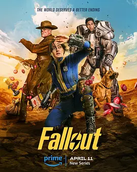

8.6
辐射 第一季
Fallout Season 1
2024
美国
评分 8.6
导演:
乔纳森·诺兰 / 丹尼尔·格雷·朗诺 / 克莱尔·基尔纳 / 弗雷德里克·E·O·托耶 / 韦伯·叶
演员:
艾拉·珀内尔 / 阿伦·莫滕 / 沃尔顿·戈金斯 / 凯尔·麦克拉克伦 / 萨莉塔·乔德霍里
类型:
冒险,剧情,科幻
剧情简介
二百多年后，人类在一次全球核战争后残存于地下避难所与荒芜地表之间。年轻的卢西·麦克莱恩生活在舒适的“避难所33号”，对外面的世界一无所知。直到她不得不离开地下，第一次踏上布满废墟与放射尘埃的洛杉矶废土。那里，流浪者、变异体与武装帮派共存，地表的危险远超她想象。与此同时，骑士马克西默斯代表武装组织“钢铁兄弟会”行走于废土之间，他的使命与卢西的旅程渐渐交汇。还有曾为好莱坞演员的变形人“深渊猎人”，他带着过去的光环与现在的腐朽身体，游走于荒野与地下之间。三条线索在荒芜的世界中交错，他们相遇、冲突、合作，揭开隐藏于“避难所”的秘密，也直视人性与文明崩塌后的道德裂痕。剧集视觉风格复古又残酷：闪光的核尘、废弃的摩天楼、辐射下扭曲的人群、古老的50年代科技混杂未来废土机械，构成一个荒诞而真实的末世图景。卢西在一次次冲突中成长，她必须决定是坚守避难所的天真，还是拥抱荒野的现实。每一次枪响、每一个变异体的出现、每一次废土盟友的背叛，都将她推向更深的世界核心。最终，避难所的“安全”神话被打破，地表并非人类最后的废墟，而可能是新生的起点。